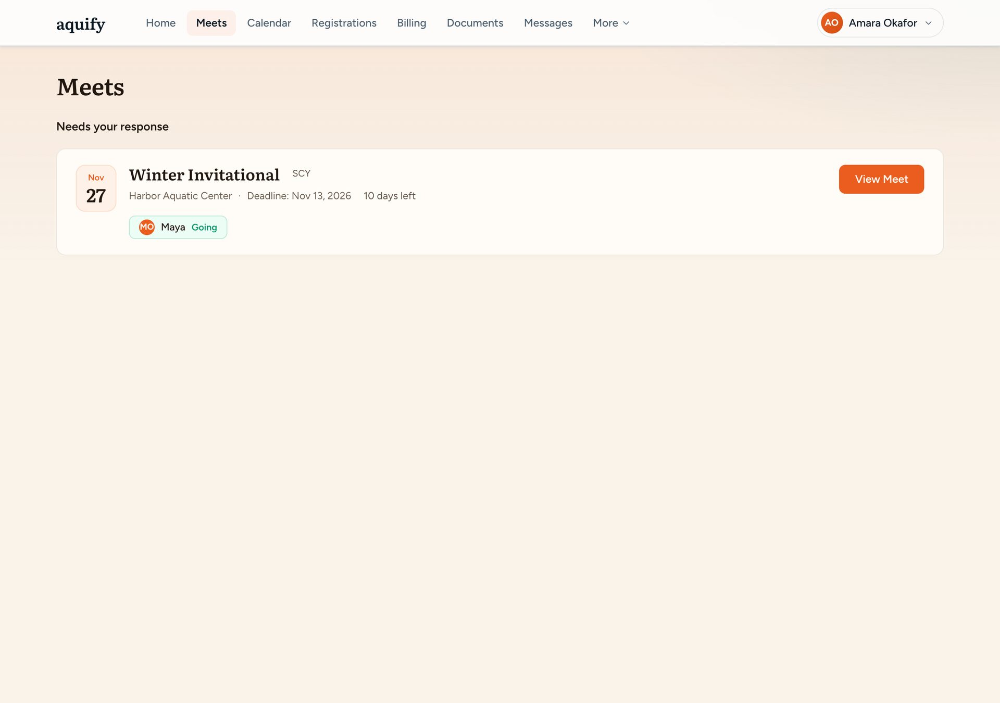
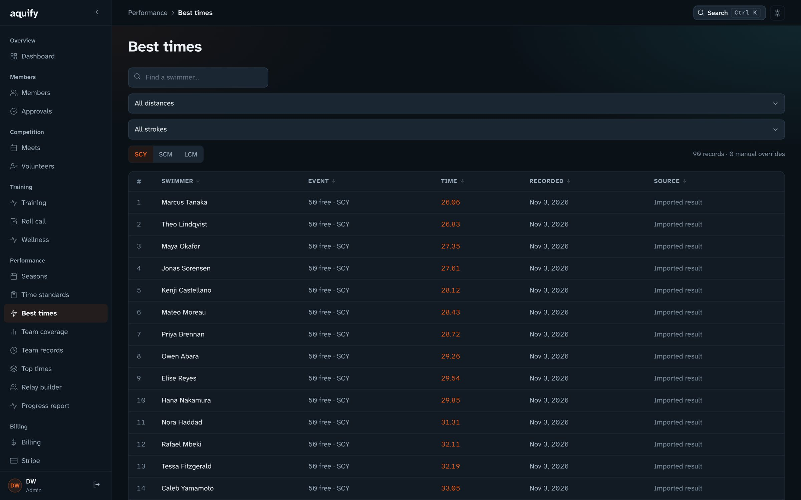
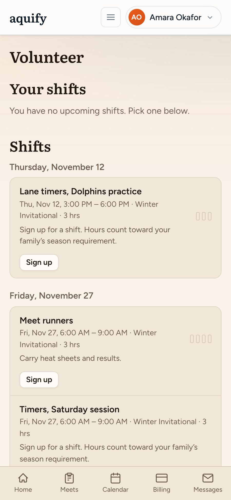

Meet day without the spreadsheet.
SD3HY3ZIP
Open a host’s file to build your meet. Send entries back in the format they expect.

Deadline and who hasn’t answeredSee every family still waiting.
Sessions and events from the host’s fileAdd any missing event by hand.
Entries and what’s still openApprove before the lock.
Open the host’s file. Collect commitments. Approve entries. Send the file back. Import the results.
From the family’s yes to the host’s file.
Parents commit from their phonesEach swimmer’s family answers yes or no. Yes opens the event list for that swimmer.
Coaches review every entryApprove, change or reject with a reason before commitments lock.
Download the entry fileThe meet’s entries, ready in the format the host asked for.


SD3
Winter Invitational.sd3
Ready to send to the host
Ready to send to the host
Results come back in.
Matched to your swimmersaquify matches each swim to your swimmer by USA Swimming ID, then by name and birthday, and lists anything it couldn’t match.
Best times and top times updateEvery swimmer’s best times refresh, and the fastest swims by age are ready the same day.



Records are checked every time you import results.

Staff the meet from the same page.
Post timer and runner shifts on the meet itself. Families sign up from their phones, and you see who’s covered and who’s still short.
- Shifts have a limit, so a job is never overbooked.
- Hours count toward each family’s season requirement.
- Right events onlySwimmers only see events their age and gender allow.
- Coach changesEdit an entry before commitments close. aquify remembers who changed what.
- Meet feesCharge a fee per event or a flat fee per swimmer, and it lands on the family’s invoice.
- Protected recordsMark a record as protected, and a faster swim waits for an admin’s okay before it replaces it.
- Relay builderSuggests the fastest four swimmers for a relay from their best times.
- Your own filesStart a meet from SD3, HY3 or ZIP, and import results from any of them.
Ready when your club is.
We’re opening aquify to clubs in order. Leave your email and we’ll tell you when it’s your turn.
Join the waitlist